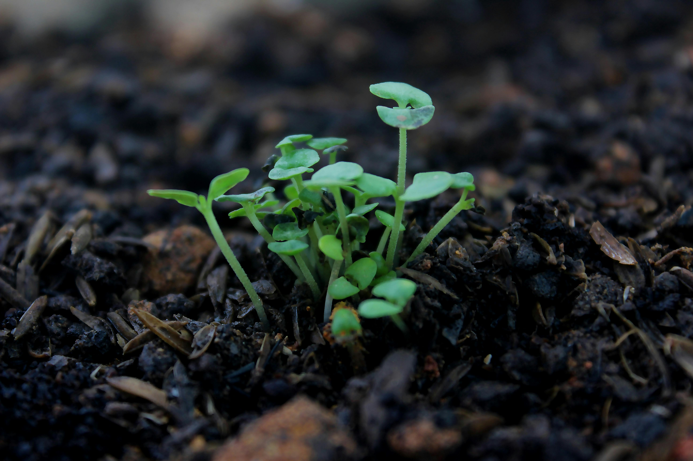
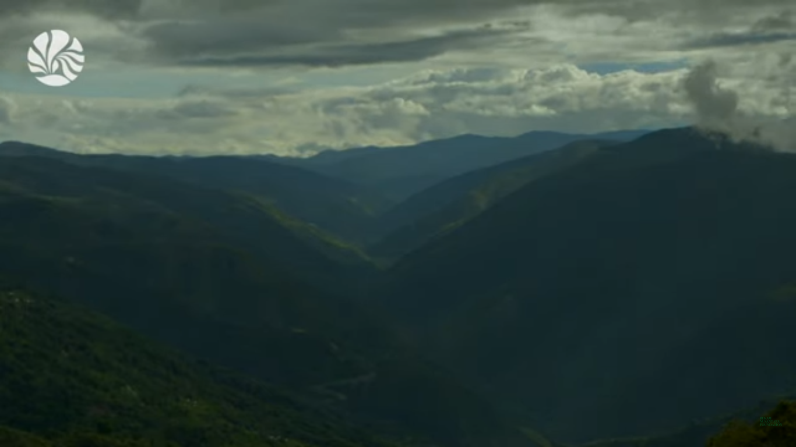
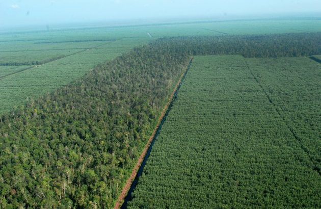
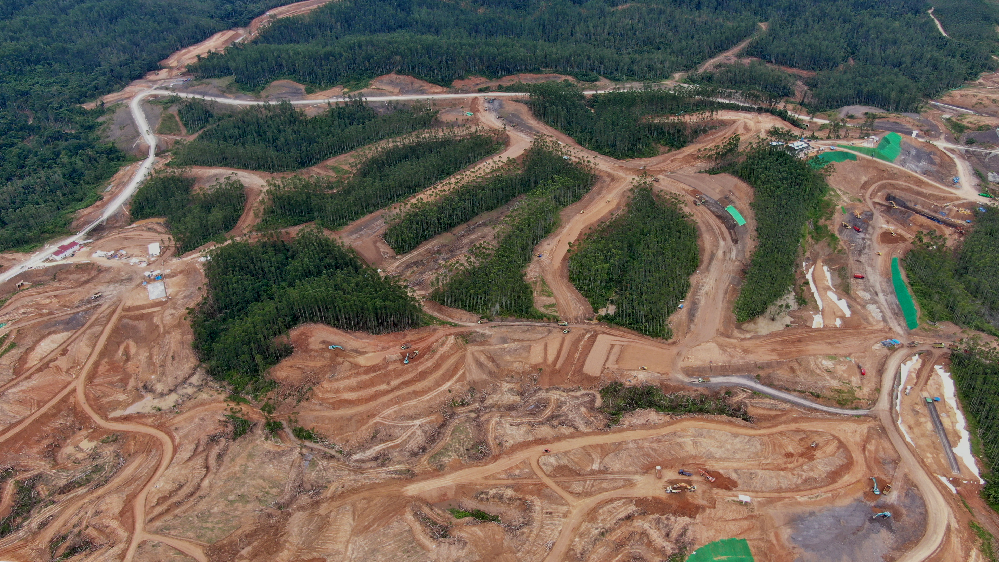
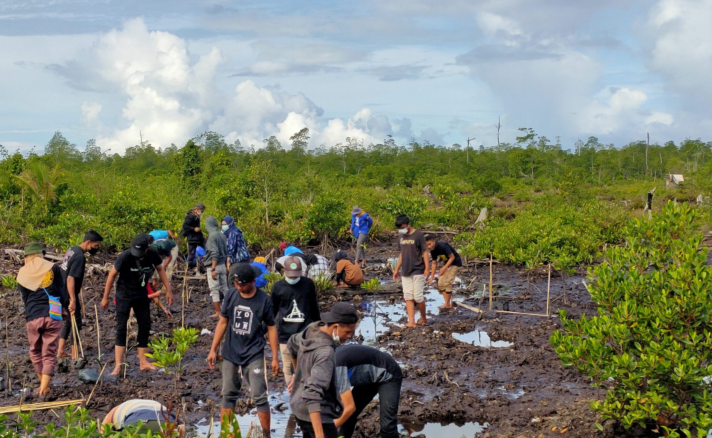
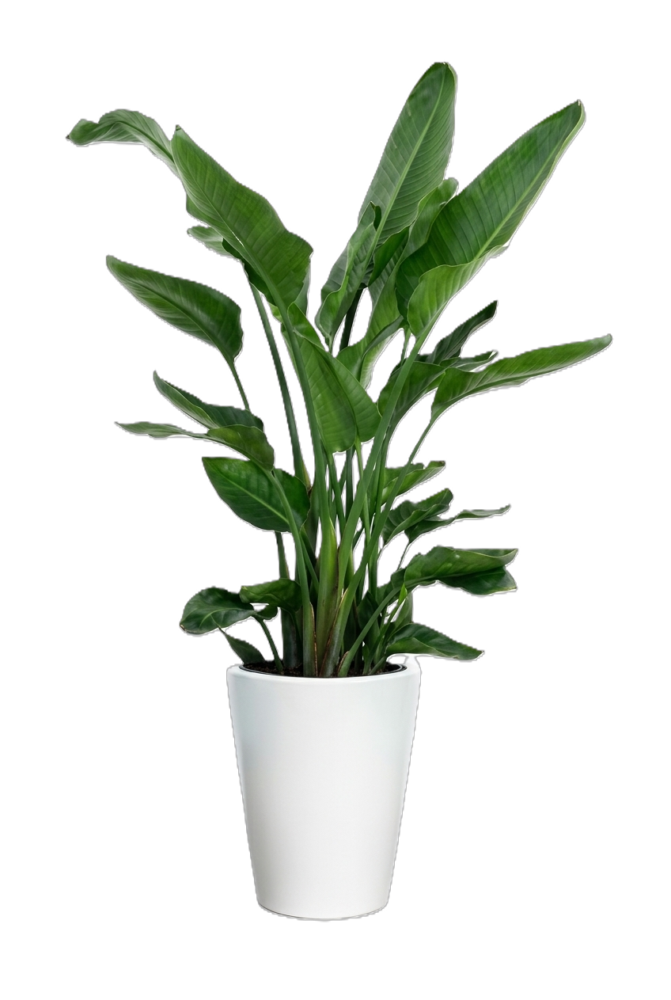

Dari pucuk yang merkah, asa bersemi. Setiap tunas adalah janji kehidupan, setapak kecil menghijaukan kembali hamparan bumi.

Hutan menyimpan cadangan air tanah, jika hutan musnah kekeringan akan merajalela.

Membantu menyembuhkan alam bisa dari rumah. Donasi bibit pohon dengan Resapling mulai 10rb saja

Menanam kembali kertas menjadi pohon bersama PT. Sinarmoas
240,210 Bibit Target 500,000 Bibit
6 hari lagi

Revitalisasi Hutan di Kalimantan akibat proyek strategis
147,783 Bibit Target 600,000 Bibit
2 Minggu lagi

Reboisasi Mangrove pencegah abrasi di Sorong Papua
21,023 Bibit Target 100,000 Bibit
1 Bulan lagi
jika masih ada pertanyaan, kami siap membantu, hubungi kami lewat kontak
Silakan buat akun terlebih dahulu, lalu pilih menu Donasi. Di sana, Anda dapat memilih campaign yang tersedia berdasarkan jenis bibit serta lokasi penanaman yang diinginkan. Setelah itu, lakukan pembayaran melalui transfer bank atau dompet digital (e-wallet).
Kami akan melakukan survei terkait kerusakan hutan di beberapa daerah di Indonesia lalu berkoordinasi dengan pemerintah ataupun pihak swasta terkait kerja sama program penghijauan lahan bersama Resapling
Tentu saja, kami melakukan dokumentasi saat dan setelah aksi sebagai bukti tanggup jawab kami terhadap donatur. Rencananya kami juga akan melakukan monitoring dengan konsep IOT dan dikirimkan secara realtime ke donatur lewat dashboard
selain menjadi donatur anda juga bisa menjadi penyelenggara maupun panitia program Resapling di daerah
resaplinghead@gmail.com 829353830303